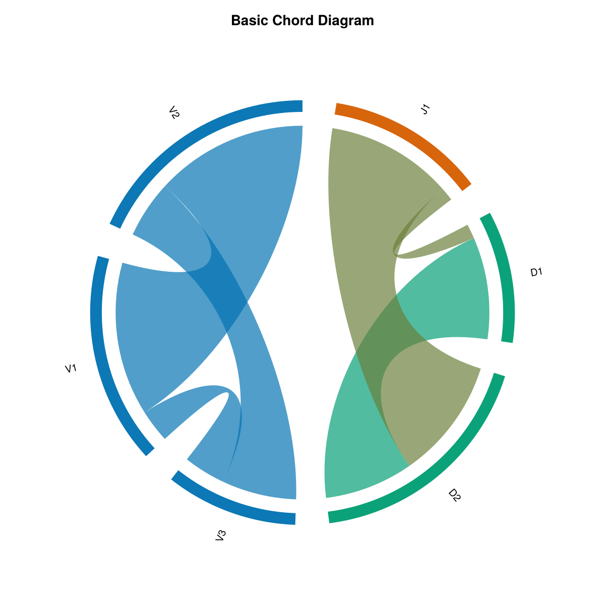
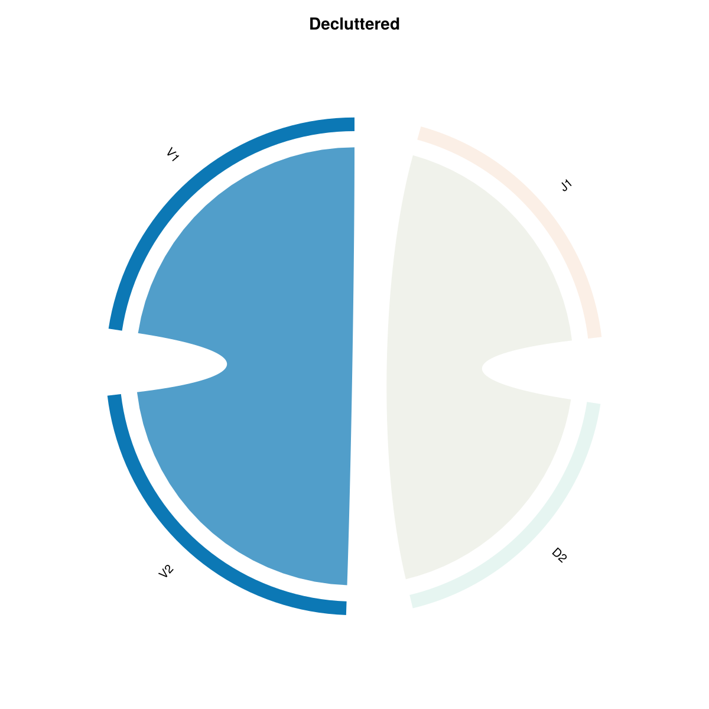
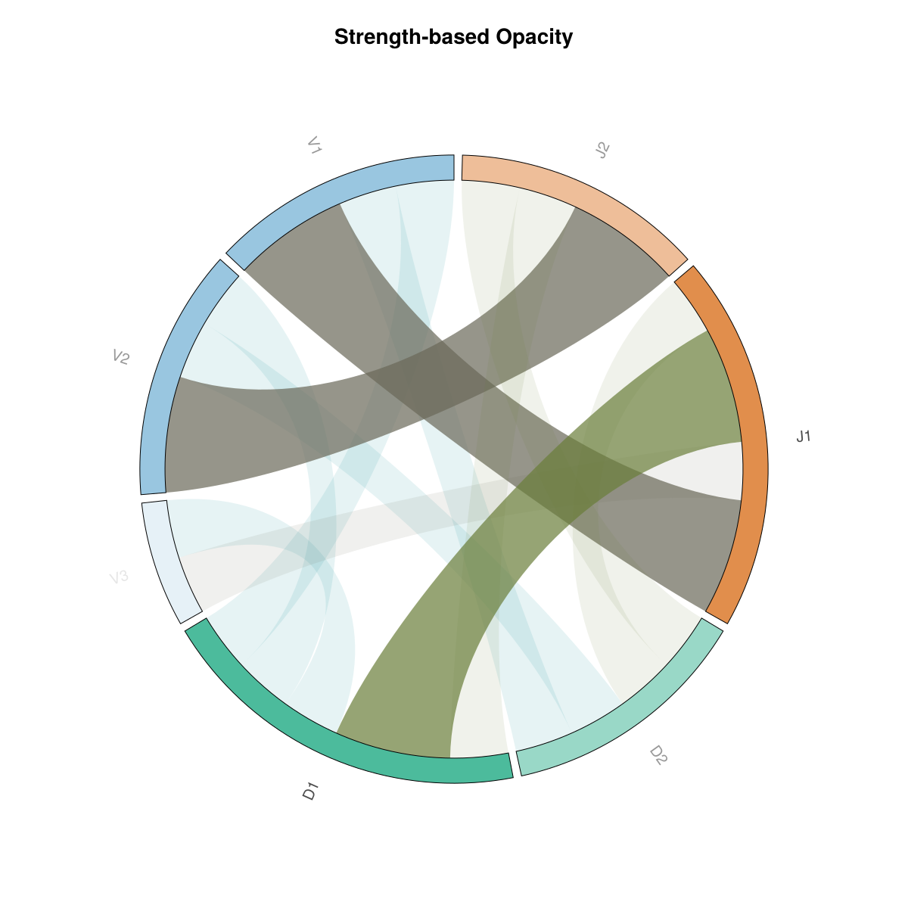
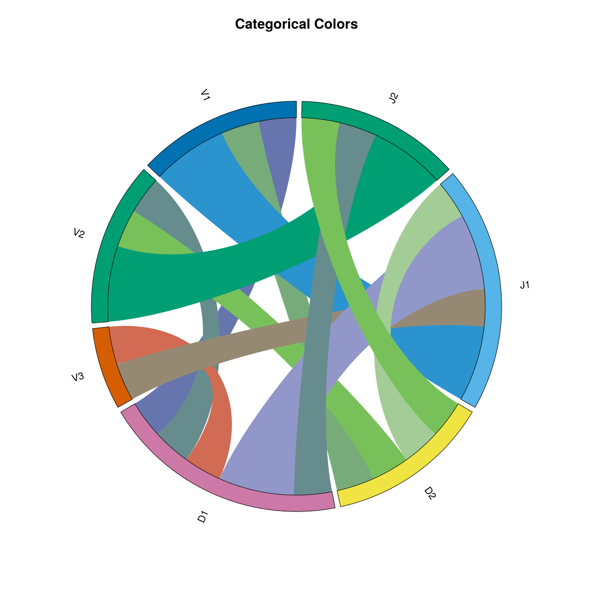
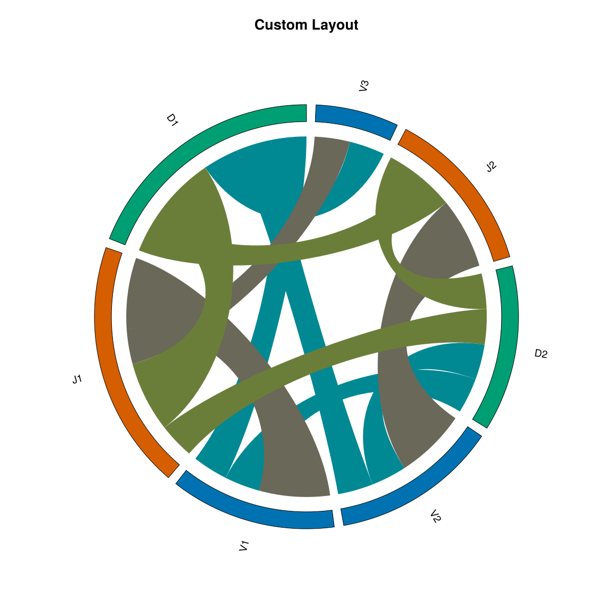

ChordPlots.jl
ChordPlots.jl
A Julia package for creating beautiful chord diagrams with Makie
ChordPlots.jl is a Julia package for creating chord diagrams using the Makie plotting ecosystem. Chord diagrams visualize relationships between categorical variables, showing how different categories co-occur with each other.
Features
- Simple API - Create chord diagrams from DataFrames
- Modern colors - Professional color schemes (Wong palette, same as AlgebraOfGraphics)
- Flexible filtering - Filter by value, top N, or minimum flow
- Customizable - Control layout, colors, labels, and styling
- Type-stable - Efficient parametric types for performance
Quick Start
using CairoMakie, ChordPlots, DataFrames
df = DataFrame(
V = ["V1", "V1", "V2", "V2"],
D = ["D1", "D2", "D1", "D2"],
J = ["J1", "J1", "J2", "J2"]
)
cooc = cooccurrence_matrix(df, [:V, :D, :J])
fig = Figure(size=(800, 800))
ax = Axis(fig[1,1])
chordplot!(ax, cooc)
setup_chord_axis!(ax)
figExample Visualizations
Basic Chord Diagram
This is the default chord diagram with standard settings. Labels are arranged around the circle grouped by their category (V, D, J), and ribbons connect labels that co-occur. Ribbon thickness represents the co-occurrence frequency. Colors are assigned by group (each category gets a distinct color), and all ribbons use uniform opacity.
Key features:
- Default group-based color scheme (Wong palette)
- Uniform ribbon opacity (
ribbon_alpha = 0.65) - Labels sorted by group
- Standard inner radius (
inner_radius = 0.92)

Filtered Data
This example demonstrates data filtering using filter_top_n(), which keeps only the top 8 labels by total flow (sum of all connections). The original dataset contained many more labels (A1-A8, B1-B5, C1-C4), but filtering reduces it to only the most connected labels. This is particularly useful when working with large datasets where you want to focus on the most important relationships and reduce visual clutter from many small, weaker connections.
What this shows:
- Only top 8 labels by total flow are displayed (out of many more in the original data)
- Focuses attention on the strongest relationships
- Useful for large datasets where filtering helps identify key patterns

Value-based Opacity
Here, ribbon opacity varies based on the co-occurrence value using ribbon_alpha_by_value=true. Thicker ribbons (higher values) appear more opaque, while thinner ribbons (lower values) are more transparent. This creates a visual hierarchy where important connections stand out more prominently.
What's different:
ribbon_alpha_by_value=trueenables value-based opacity scaling- Ribbons with higher co-occurrence counts are more opaque
- Ribbons with lower counts are more transparent
- Creates a visual emphasis on stronger relationships

Categorical Colors
This example uses colorscheme=:categorical, which assigns a distinct color to each individual label rather than grouping by category. Every label gets its own unique color from the palette, making it easier to distinguish individual labels at the cost of losing the group-based color coding.
What's different:
colorscheme=:categoricalinstead of:group- Each label has its own distinct color
- No color grouping by category
- Useful when you need to distinguish many individual labels

Custom Layout
What is a custom layout? A custom layout allows you to control how labels are arranged around the circle and how the arcs are sized. This example demonstrates several layout customizations: sorting by value (largest arcs first), adjusting the inner radius (how close ribbons start to the center), and changing the gap between arcs.
What's different:
sort_by=:value- Labels are sorted by their total flow (largest first), so the most connected labels get the largest arcsinner_radius=0.85- Ribbons start closer to the center (default is 0.92), creating more space between ribbon endpoints and the outer circlegap_fraction=0.05- Slightly larger gaps between arc segments (default is 0.03), making individual arcs more distinct
These settings help emphasize the most important labels and create a different visual balance compared to the default group-sorted layout.

Installation
using Pkg
Pkg.add(url="https://github.com/mashu/ChordPlots.jl")Documentation
Explore the documentation to learn how to:
- Get started with your first chord diagram
- Create co-occurrence data from various sources
- Customize appearance with colors, layouts, and styling
- Filter and manage data for better visualizations
- Use advanced features for publication-quality figures
License
MIT License